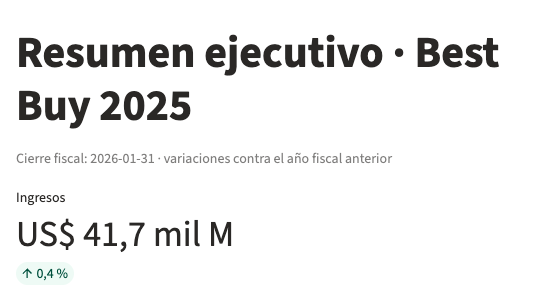
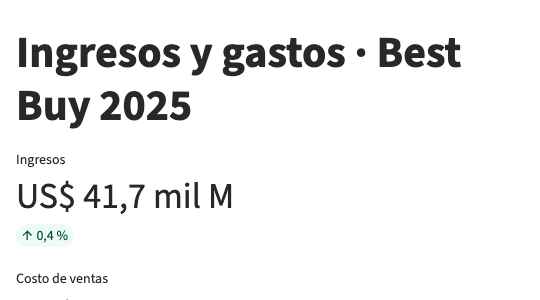
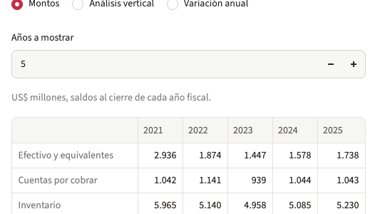

LA PREGUNTA
Un ciclo de caja corto puede venir de vender inventario más rápido o de negociar más días con proveedores. ¿Qué estrategia explica la diferencia entre estas cadenas?
LO QUE CONSTRUÍ
Un proceso reproducible que extrae cifras de SEC Companyfacts, conserva la etiqueta XBRL usada, normaliza los estados financieros y calcula ratios en DuckDB.
EL DASHBOARD
Ocho páginas para explorar resumen ejecutivo, ingresos y gastos, cuentas por cobrar y pagar, flujo de efectivo, estado de resultados, balance general y ciclo de caja comparativo.
Hallazgo principal
En 2025 Target tuvo el ciclo de caja más corto: −1,5 días. No fue quien más rápido vendió el inventario; su ventaja estuvo en pagar a proveedores después.
| Cadena | Ciclo 2019 | Ciclo 2025 | Días inventario 2025 | Días pago 2025 |
|---|---|---|---|---|
| Target | −6,2 | −1,5 | 59,5 | 61,0 |
| Costco | 2,9 | 1,7 | 27,6 | 30,1 |
| Walmart | 2,0 | 2,8 | 40,1 | 43,0 |
| Best Buy | 8,4 | 14,6 | 59,1 | 53,6 |
| Dollar General | 34,4 | 28,1 | 78,0 | 49,9 |
Días calculados con saldos al cierre; los resultados son indicadores del análisis, no asesoría de inversión.
Target: proveedores financian el ciclo
Su inventario tarda 59,5 días en venderse y paga a proveedores a 61 días; el ciclo de caja resulta negativo.
Costco: rotación de inventario
Su ciclo corto se explica por la velocidad: vende el inventario en menos de 28 días, con una rotación aproximada de 13 veces al año.
Dollar General: pico en 2023
Su ciclo llegó a 46,1 días y sus días de inventario rondaron 95 en 2022–2023. En 2025 el ciclo bajó a 28,1 días.
Best Buy: ciclo más largo
Pasó de 8,4 días en 2019 a 14,6 en 2025, mientras los días de pago cayeron de 69,4 en 2020 a 53,6.
El dashboard
Capturas de la aplicación interactiva. Las cifras de origen son públicas y provienen de los formularios 10-K de la SEC.



Herramientas y límites
Proceso
Python descarga y normaliza XBRL; SQL con DuckDB construye estados por empresa y año fiscal y calcula márgenes, liquidez, endeudamiento, rotación y días del ciclo de caja.
Comparabilidad
Las empresas cierran el año fiscal en meses distintos. Los ratios usan saldos de cierre, no promedios; Walmart y Costco incluyen cuotas de membresía en ingresos.
Datos ausentes
Target y Dollar General no reportan cuentas por cobrar. Los días de cobro se consideran cero para este análisis, dado que venden casi todo al contado; los pasivos faltantes se derivan como activos menos patrimonio.